🚀 Accessing Prometheus Metrics in a Docker Container
Have you ever wanted to run Prometheus inside a Docker container and access those sweet metrics from your host machine? Let’s walk through the steps to get Prometheus up and running inside Docker and access its metrics. 📝
💡 What We Want to Achieve
We’ll set up Prometheus to run inside a Docker container and expose its metrics to your host. This will allow us to scrape and view the metrics from outside the container. Let’s get started! 🚀
1. Expose the Port from the Docker Container 🛠️
First, we need to expose the port from inside the container to the host. The code provided sets Prometheus to serve metrics on port 9091. To expose this port outside the Docker container, we need to map the container’s port 9091 to our host’s port 9091.
Here’s the command to run your Docker container with port mapping:
docker run -p 9091:9091 mycontainer/prometheusremote
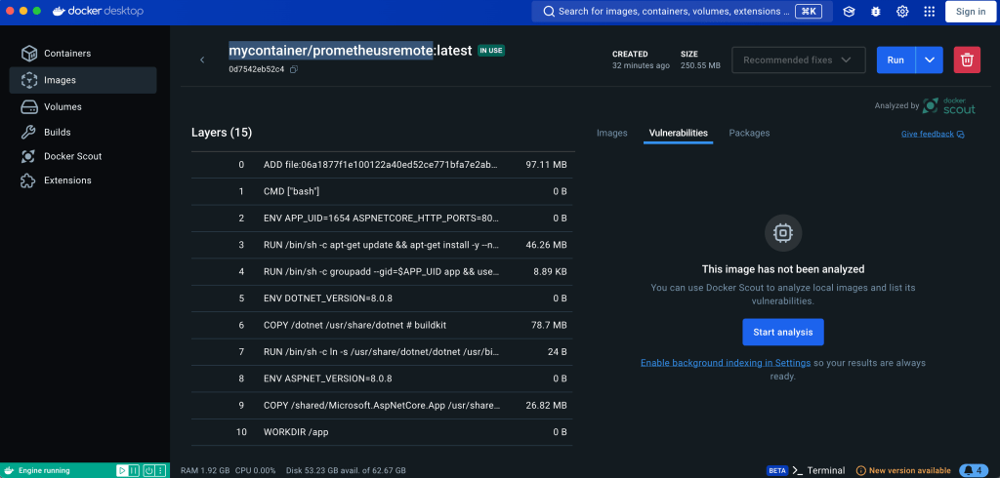
This command tells Docker to map the container’s 9091 port to the host’s 9091 port. Simple, right? 😎
new one
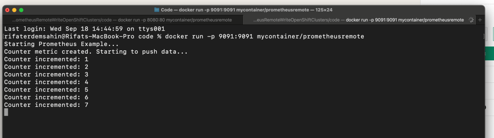
start fresh
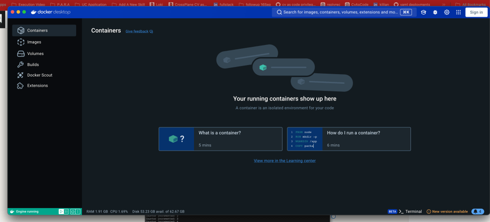
delete and restart
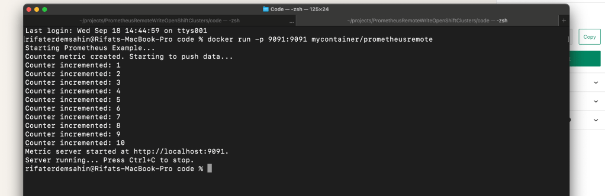
Seeing with the port numbers
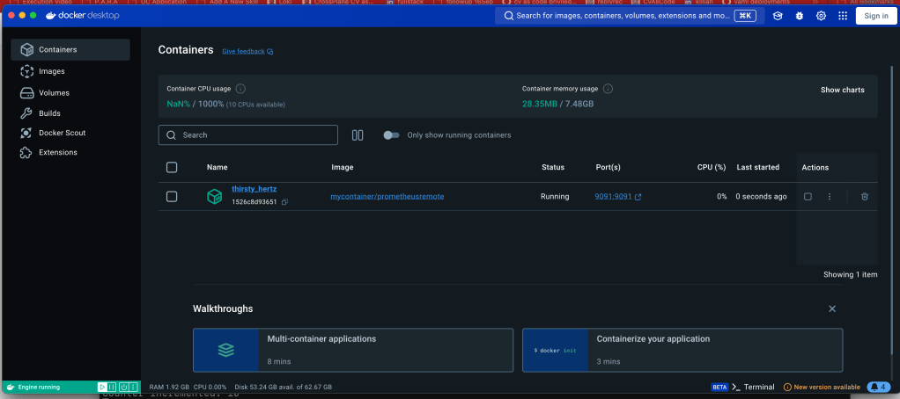
- Access the Metrics from Your Host 🌐
Now that the container is running and the port is exposed, you can easily access the Prometheus metrics from your host machine. Open up your browser and visit the following URL:
http://localhost:9091/metrics
This will display the metrics in Prometheus format, ready to be scraped or just viewed for fun! 🎉
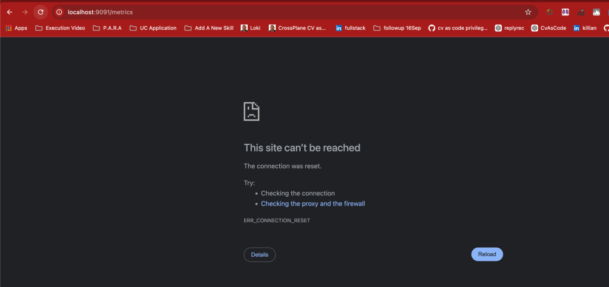
3. Verify Prometheus is Running in the Container 🔍
Want to double-check that everything is working inside the container? You can connect to the container’s shell with the following command:
docker exec -it
docker exec -it b8fc08ef73974496d903dc01503dcd58ef4a2b750072bab3b95de09f342f0214 /bin/sh
Once inside, you can verify that the metrics are being served by running:
curl http://localhost:9091/metrics
This will show you the raw metrics inside the container, ensuring everything is working smoothly. 💪
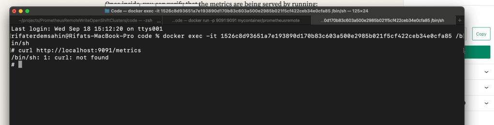
data is inside the counter and it is there
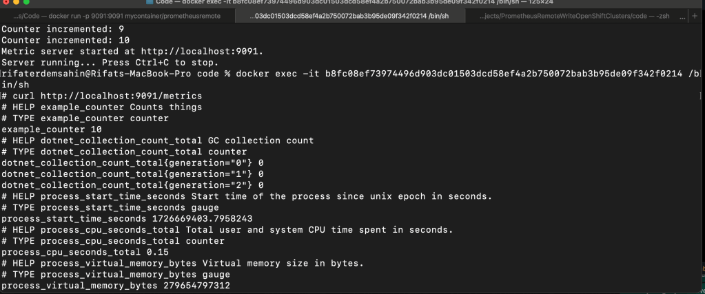
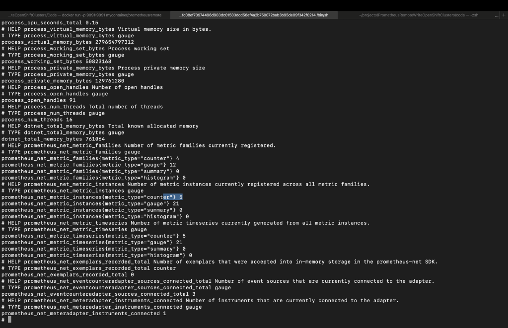
🔄 Final Thoughts
Following these simple steps will give you easy access to Prometheus metrics running inside your Docker container. Whether you want to scrape the metrics or just view them for troubleshooting, you’re all set!
Here’s a quick recap:
-
Expose port
9091from the container to your host. -
Access the metrics from your browser at
http://localhost:9091/metrics. -
Verify the container’s Prometheus server using
docker execandcurl.
🚀 Now you're ready to track and monitor your containerized applications with Prometheus like a pro!
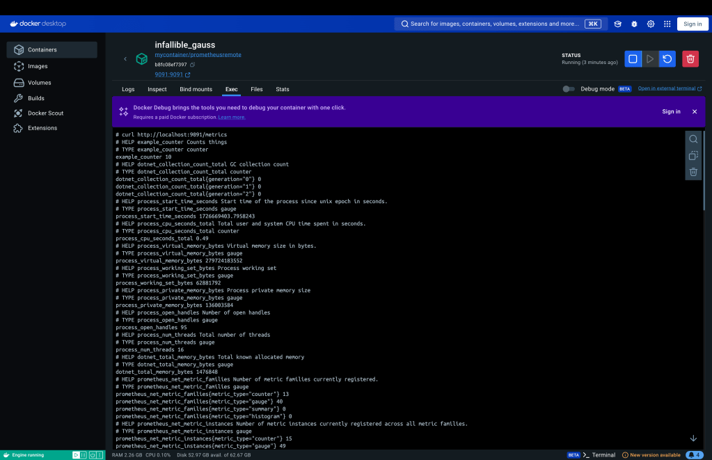
🔗 Connect with me:
Let me know how your Prometheus setup goes! ✨
Curl is not there rebake it
To install curl on a Linux system, follow the steps below based on your Linux distribution.
For Debian-based systems (e.g., Ubuntu):
-
Open the terminal.
-
Update the package list:
sudo apt update
- Install
curl:
sudo apt install curl
- Confirm installation by checking the version:
curl --version
For Red Hat-based systems (e.g., Fedora, CentOS, RHEL):
-
Open the terminal.
-
Install
curlusing the following command:
sudo yum install curl
- Confirm installation by checking the version:
curl --version
For Arch Linux:
-
Open the terminal.
-
Install
curlusing the following command:
sudo pacman -S curl
- Confirm installation by checking the version:
curl --version
Let me know if you need further assistance!
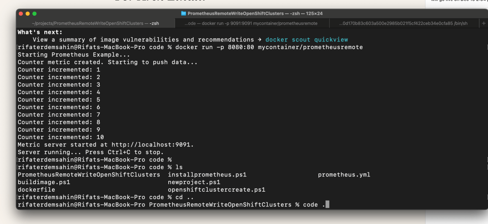
To add sudo and curl with a ping test to the Dockerfile, you need to update both the build and final stages accordingly. Here is the modified Dockerfile:
Use the ASP.NET runtime image as the base
FROM mcr.microsoft.com/dotnet/aspnet:8.0 AS base
WORKDIR /app
EXPOSE 80
Install curl and sudo in the base image
RUN apt-get update && apt-get install -y sudo curl iputils-ping
Use the .NET SDK image for building the application
FROM mcr.microsoft.com/dotnet/sdk:8.0 AS build
WORKDIR /src
Install curl and sudo in the build stage (if needed)
RUN apt-get update && apt-get install -y sudo curl iputils-ping
Copy the project file and restore dependencies
COPY PrometheusRemoteWriteOpenShiftClusters/PrometheusRemoteWriteOpenShiftClusters.csproj PrometheusRemoteWriteOpenShiftClusters/
List the contents of the directory to see the copied files
RUN ls -la PrometheusRemoteWriteOpenShiftClusters/
RUN dotnet restore PrometheusRemoteWriteOpenShiftClusters/PrometheusRemoteWriteOpenShiftClusters.csproj
Copy the rest of the application code
COPY PrometheusRemoteWriteOpenShiftClusters/. PrometheusRemoteWriteOpenShiftClusters/
WORKDIR /src/PrometheusRemoteWriteOpenShiftClusters
Publish the application
RUN dotnet publish -c Release -o /app
Final stage to run the application
FROM base AS final
WORKDIR /app
Copy the published application
COPY --from=build /app ./
Test curl and ping within the final image
RUN curl --version && ping -c 4 google.com
Entrypoint to run the application
ENTRYPOINT ["dotnet", "PrometheusRemoteWriteOpenShiftClusters.dll"]
Changes made:
-
Added
sudo,curl, andiputils-pinginstallation to both thebaseandbuildstages usingapt-get(since the base image is based on Debian). -
Added a
RUNcommand in the final stage to testcurland perform a simple ping check.
This Dockerfile installs the necessary tools and ensures they work inside the container by checking their versions and functionality. Let me know if you'd like any further modifications!
Repo > https://github.com/rifaterdemsahin/PrometheusRemoteWriteOpenShiftClusters/blob/main/outputs.md
Imported from rifaterdemsahin.com · 2024